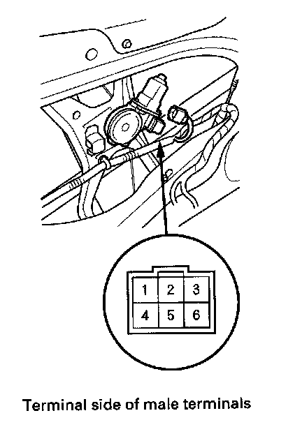
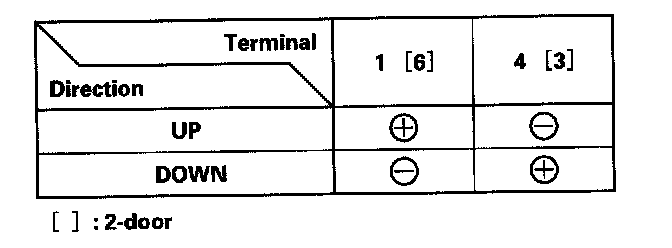

Driver's Power Window Motor Test
Driver's Power Window Motor Test1. Remove the door panel.
- 4-door.
- 2-door.

2. Disconnect the 6P connector from the driver's power window motor.
Motor Test

3. Test the motor in each direction by connecting battery power and ground according to the table. When the motor stops running, disconnect one lead immediately.
4. If the motor does not run or fails to run smoothly, replace it.
Pulser Test (With AUTO UP/AUTO DOWN)
5. Reconnect the 6P connector to the driver's power window motor.
6. Turn the ignition switch ON (II).
7. Check for voltage between the terminals.
- There should be battery voltage between the NO.6 [No.1] (+) and No.5 [No.2] (-) terminals.
[ ] : 2-door
- Connect an analog voltmeter between the No.3 [No.4] (+) and No.5 [No.2] (-) terminals, and run the window motor down or up. The voltmeter needle should move back and forth alternately (a digital voltmeter reads about 2.5 V).
[ ] : 2-door
- Connect an analog voltmeter between the No.2 [No.5] (+) and No.5 [No.2] (-) terminals, and run the power window motor down or up. The voltmeter needle should move back and forth alternately (a digital voltmeter reads about 2.5 V).
[ ] : 2-door
8. If the voltage is not as specified, do the power window switch input test:
- 4-door: terminals No.5, 6, 7, and 16.
- 2-door: terminals No. 13, 14, 15, and 16.
9. If the switch is OK, replace the power window motor.
10. Reset the power window control unit.